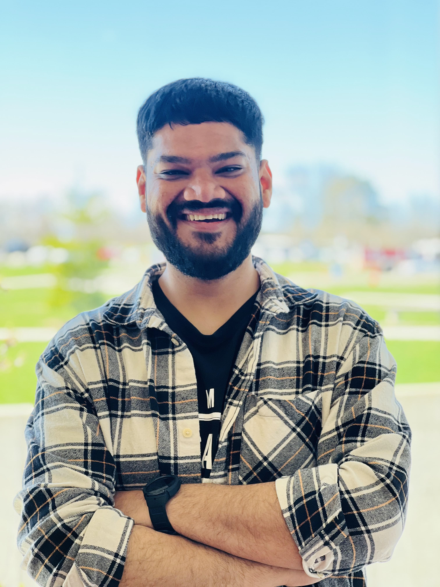

I created a Power BI dashboard to analyze retail sales and costs for nearly 200,000 products and 160,000 customers, totaling over $176M in sales. I cleaned and prepared the data using Power Query and used DAX to calculate key metrics like Cost of Goods Sold, total sales, and inventory. The dashboard includes interactive visuals with drill-downs and filters to explore data by location, category, and time. This helped me identify underperforming categories and expensive SKUs, leading to recommendations that improved profitability and efficiency.

Collaborating with Fleming Super Store, I utilized Power BI to tackle financial and customer issues. The result: a 15% boost in revenue, a 20% increase in customer satisfaction, and a significant drop in stockouts from 20 to 5 per month. The success demonstrates the impactful role of data-driven insights in enhancing operational efficiency and business outcomes.

Participating in the international value chain exchange learning with Netherlands students was an enlightening experience that provided a deep understanding of the intricacies of global business operations. We had completed three engaging online meetings; I not only had the opportunity to connect with our peers from a different part of the world but also delved into the analysis of an international value chain and its alignment with Sustainable Development Goals (SDGs).

I explored all aspects of customs management, from preparing documents to accurately calculating duties and taxes. By improving logistical processes and learning about tariff treatments like MFN and CUSMA, I made sure everything ran smoothly and efficiently. Understanding HS codes helped me save costs and show clear landed costs, which helped in decision-making. This project showed me how crucial Canada Customs is for efficient operations and smooth trade relationships.


Since February 2025 I have been volunteering with Canadian Tire Jumpstart, supporting event activities by managing lines, distributing snacks and drinks, and assisting attendees. In June 2025, I also organized and led a fun pet photo contest fundraiser to help raise money for Jumpstart Charities.

In March 2025, I had the opportunity to volunteer with the ASCM Toronto Chapter. I’ve seen firsthand how supply chain can bring hope to those in need. I’m truly grateful to be part of a community that shows how volunteering in supply chain can change lives.

In March 2023, I participated as a student volunteer team dedicated to uplifting children with critical illnesses through the Make-A-Wish Foundation. Our primary endeavor, an 8-Ball Pool Event, garnered significant support, with our online campaign raising $745, Eventbrite registrations contributing $312, and an Ottawa Senators Suite Ticket auction generating an impressive $1500, alongside additional contributions totaling $58. Together, we surpassed our initial fundraising goal of $1000, and raised around $ 2618 in total. Beyond simply playing a game, this event symbolized our commitment to making a tangible difference in the lives of these children and their families. With every dollar raised, we've moved closer to fulfilling the dreams of those in need, fostering hope and resilience in the face of adversity.

Since September 2023, I’ve proudly volunteered in multiple roles at Fleming College, supporting student life and campus events. As part of the SAC Street Team, I promoted events, gathered feedback, and boosted student engagement. I assisted at the Job Fair with setup and attendee support, ensuring a smooth experience for everyone. As a Winter Orientation Ambassador, I welcomed new students and introduced them to campus life. I also celebrated diversity through the Multi-Cultural Showcase. These experiences helped me grow as a leader, communicator, and team player, while giving back to the vibrant Fleming community.

I hold a wide range of globally recognized certifications that reflect my deep commitment to supply chain and operations excellence. Notably, I am APICS Certified Supply Chain Professional (CSCP) and currently pursuing the Certified in Planning and Inventory Management (CPIM) designation, validating my end-to-end expertise in supply chain strategy, planning, and execution. I also earned the ASCM Supply Chain Procurement Certificate, showcasing my proficiency in procurement and supplier collaboration. Complementing these, I completed certifications from Rutgers University (Supply Chain Management Specialization), University of Pennsylvania (Retail Digital Supply Chain), and University of British Columbia (Seasonal Forecasts methods ), I also have learned ESG principles, and risk mitigation strategies. These credentials, combined with additional training in SAP ERP, Lean Six Sigma, logistics, and analytics, position me as a well-rounded and adaptable supply chain professional committed to continuous learning.

Throughout my academic journey, I've pursued excellence and aimed to positively impact others. Recently in 2024 honored with the Student Life Volunteer Award and recognized as an Emerging Student Leader, I've demonstrated leadership and commitment to community service. Notably, I helped raise $2681 for Make a Wish Canada in 2023 and achieved First Runner-Up in the National Kickboxing Championship in India in 2019. These experiences, along with representing my college in a national project competition in 2015, reflect my dedication to personal and academic growth through collaboration, service, and leadership. Moving forward, I'm driven to continue pushing boundaries and making a difference in both academia and beyond.

I am a dedicated supply chain professional with a strong track record of optimizing operations, enhancing customer satisfaction, and improving efficiency. I began my career in Production Planning at SCHOTT Pharma, India. where I developed expertise in MRP, production processes, and regulatory compliance. After getting promoted as a Buyer, I supproted procurement team with contract negotiations, integrated data analytics, and reduced lead times and costs. After moving to Canada for higher studies, I joined Amazon’s Ottawa fulfillment center, gaining hands-on logistics experience. At Michaels, I supported retail operations by aligning store needs with supply chain processes. I also served as a Peer Tutor at Fleming College, sharing my knowledge of supply chain management. Currently, I work at Canadian Tire Corporation as a Replenishment Analyst, managing around 2500+ SKUs across five business categories worth $150M in annual sales. I’ve collaborated with 50+ global suppliers and six internal teams to reduce $20M in excess orders, improve inventory alignment, support national promotions, and build dashboards that drive strategic decisions.
.jpg)
I actively participated in diverse co-curricular activities at Fleming College, showcasing strong leadership, effective communication, and time management skills. From cultural showcases to career events, workshops, and resilience programs, I have demonstrated a commitment to personal growth, social responsibility, and holistic wellness.